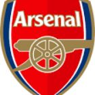

|  | Arsenal FC |
| Ethnic | English |
| Job | English Football Club |
| Desc | xxxx |
Affiliation
| Location | London |
| England |
2009 05 13 Retrieve
[Arsenal Refute Pat Rice Retirement Claims] Contrary to media reports this morning, Arsenal assistant manager Pat Rice is not considering retirement at the end of the current season. He remains a key part of Arsene Wenger’s backroom staff and is currently helping prepare the team for trip to Manchester United on Saturday
2014 07 11 Retrieve
[Al Ahly right-back Fathi set for Arsenal trial] Ahmed Fathi is set to travel to England on Friday to undergo a trial period at Arsenal Football Club in preparation to sign him if he has a successful trial and so Fathi will be unavailable to participate in Al Ahly’s game against Smouha in the semi-final of the Egypt Cup next Monday
2014 10 08 Retrieve
[Mesut Ozil: Arsenal midfielder out with knee injury for up to 12 weeks] It is too early to say how long Ozil may be out of action
- 2017 01 19
- Per Mertesacker has signed a one-year contract extension with the Gunners
- 2017 01 25
- Arsenal starlet Gedion Zelalem will spend the rest of the season on loan at Dutch second-division side VVV-Venlo
- 2017 02 27
- Andries Jonker has left his role as an academy coach at Arsenal to inherit the managerial reins at Bundesliga side Wolfsburg
- 2018 01 04
- Arsenal have completed the signing of centre-back Konstantinos Mavropanos from PAS Giannina for a fee in the region of £1.8 million
- 2018 01 11
- Valencia have announced that they have reached an agreement to sign Francis Coquelin from Arsenal
- 2018 01 16 Retrieve
- Arsenal winger Theo Walcott is on the verge of signing for Everton for a fee of £20m
- 2018 01 17
- Everton have completed the £20 million signing of Theo Walcott from Arsenal
- 2018 01 22
- Manchester United sign Alexis Sanchez as Mkhitaryan joins Arsenal
- 2018 01 31
- Chelsea have completed the signing of Olivier Giroud from Arsenal for an estimated £18 million
2018 02 13 Retrieve
[Arsenal have confirmed that striker Alexandre Lacazette will be out of action for up to six weeks with a knee injury] Striker Alex Lacazette had an arthroscopy on his left knee in London on Tuesday morning. The minor procedure was a success and he will now undergo a period of rehabilitation. It is envisaged that he will return to the squad within four to six weeks.
2018 04 20 Retrieve
[Arsene Wenger has announced that he will stand down as Arsenal manager at the end of the season] After careful consideration and following discussions with the club, I feel it is the right time for me to step down at the end of the season. I am grateful for having had the privilege to serve the club for so many memorable years. I managed the club with full commitment and integrity. I want to thank the staff, the players, the directors and the fans who make this club so special. I urge our fans to stand behind the team to finish on a high. To all the Arsenal lovers take care of the values of the club. My love and support for ever
2018 05 21 Retrieve
[Santi Cazorla leaves Arsenal after six years] Santi Cazorla is leaving the club after coming to the end of his contract. Santi joined us from Malaga in the summer of 2012, during which time he established himself as an integral part of the team and proved to be one of the most technically-gifted players in the Premier League. Making 180 appearances for us in six years, Santi scored 29 goals in all competitions, helping the team win two Emirates FA Cups and two FA Community Shields. His importance to us was emphasised with his sublime free-kick in the 2014 Emirates FA Cup final, which sparked our unforgettable comeback to win the trophy.
- 2018 05 23
- Arsenal confirm Unai Emery appointment as Arsene Wenger successor
- 2018 06 05
- Arsenal sign Stephan Lichtsteiner on free transfer
- 2018 06 06
- Arsenal are close to signing 17-year-old midfielder Yacine Adli for a compensation fee of £223,000
2018 06 07 Retrieve
[Aubameyang & Bellerin show off new Arsenal away shirt] The colour blue has been a feature in Arsenal away shirts since the early years and this shirt stays rooted in that tradition whilst also incorporating the colour red in the form of a diamond cut pulse pattern running through the middle with heather-marl flecks on the sleeves.
- 2018 06 15
- Arsenal have announced midfielder Granit Xhaka has committed his future to the Premier League club by signing a new long-term contract
- 2018 06 19
- Arsenal have completed the capture of Germany international goalkeeper Bernd Leno from Bayer Leverkusen
- 2018 06 20
- Sampdoria president Massimo Ferrero has confirmed that Lucas Torreira has left the club to join Arsenal for €30 million
- 2018 07 02
- Arsenal have announced the signing of defender Sokratis Papastathopoulos from Borussia Dortmund for a fee in the region of €19 million
- 2018 07 03
- Calum Chambers has signed a new long-term contract at Arsenal
- 2018 07 09
- Arsenal are set to complete the signings of Sampdoria midfielder Lucas Torreira and Lorient’s Matteo Guendouzi
- 2018 07 27
- Arsenal have unveiled their third kit for this season - a modern green number that comes with a nod to the club’s history ingrained
- 2018 07 29
- Arsenal forward Chuba Akpom is set to join Greek side PAOK in the coming days
- 2018 07 31
- Arsenal teenager Emile Smith Rowe has signed a new long-term contract with the Gunners following an impressive pre-season with the club
- 2018 08 03
- Alex Iwobi has signed a new long-term contract with Arsenal that ties him to the London side until 2022
2018 08 07 Retrieve
[Stan Kroenke is set to complete an incredible takeover of Arsenal that will see the overall value of the club stand at £1.8 billion] We at KSE are moving forward with this offer leading to 100 per cent ownership of the club. We appreciate Mr Usmanov’s dedication to the Arsenal Football Club and the storied ethos and history the Club represents.
KSE UK is pleased to announce the terms of its all-cash offer to acquire the entire issued and to be issued ordinary share capital of Arsenal Holdings PLC other than the Arsenal Shares already held by KSE. KSE, a Delaware corporation wholly-owned by Mr E. Stanley Korenke, currently holds 41,743 Arsenal Shares, representing approximately 67.09 per cent of the existing issued share capital of Arsenal
- 2018 08 09
- West Ham have completed the signing of Lucas Perez from Arsenal for a reported £5 million fee
- 2018 08 14
- Alisher Usmanov is open to investing in Everton after agreeing to the sale of his stake in Arsenal to Stan Kroenke in a £1.8 billion [$2.3bn] takeover
2018 08 16 Retrieve
[Maitland-Niles faces lengthy Arsenal injury absence] Ainsley has sustained a small fracture to his left fibula and will be out for six to eight weeks
2018 08 17 Retrieve
[David Ospina has completed his loan switch from Arsenal to Napoli, with the Serie A side having a €5 million (£4m/$6m) purchase option] SSC Napoli have officially acquired the services of David Ospina from Arsenal with the details of the loan including a purchase option.
- 2018 08 28
- Arsenal starlet Reiss Nelson is expected to join Hoffenheim on a season-long loan deal
2018 10 29 Retrieve
[Mesut Ozil named Arsenal’s player of the season by fans] Few will forget his performance in the 3-0 defeat of Manchester United in early October, nor his outstanding contribution during a golden period that took in victories against Bayern Munich, Everton and Swansea City as the Gunners moved to the top of the table.
2018 11 12 Retrieve
[Arsenal striker Alexandre Lacazette has pulled out of the France squad for their upcoming internationals] This decision was taken after an exchange between Dr. Franck Le Gall and his counterparts at Arsenal.
2018 11 12b Retrieve
[Danny Welbeck has undergone a second planned surgery on his broken right ankle] Both procedures went well, without complications. Danny will now recuperate and start his rehabilitation. It’s too early to say how long this will take.
2018 11 19 Retrieve
[England star Jordan Nobbs could be a doubt for next summer’s World Cup after rupturing her anterior cruciate ligament at the weekend] Following scans this morning, we can confirm that Jordan has suffered an ACL rupture in her left knee and she is now receiving specialist care. Everyone at the club wishes Jordan a speedy recovery and will give their full support in her journey back to full fitness.
2018 12 07 Retrieve
[Arsenal centre-half Rob Holding has ruptured the anterior cruciate ligament in his left knee] Further to the injury sustained during our match at Manchester United on Wednesday night, we can confirm that Rob Holding has ruptured the anterior cruciate ligament of his left knee. between six to nine months. Everyone at the club will now be working as hard as we can to ensure Rob is back on the pitch as soon as possible.
2019 02 01 Retrieve
[Laurent Koscielny has handed Arsenal a timely fitness boost ahead of their trip to Manchester City] Returned to full training further to bruising and soft tissue swelling to face and jaw.
2019 02 11 Retrieve
[Juventus announce Aaron Ramsey deal as Arsenal midfielder signs four-year contract] Aaron’s made a fantastic contribution to our club since joining from Cardiff City in 2008. He has always been a consummate professional and will always have a special place in the hearts and memories of Arsenal fans around the world. We look forward to Aaron helping the team to a strong end to this season before he joins Juventus in the summer
2019 03 10 Retrieve
[Chris Smalling shoved by Arsenal fan hours after shocking Grealish assault] We utterly condemn the behaviour of the individual who ran onto the pitch and approached Chris Smalling during today’s match. We would like to apologise to Chris and Manchester United, and are pleased that he was apprehended and arrested. We will be working closely with the Metropolitan Police in their investigation. The individual will also be banned from Arsenal matches home and away. Our matchday staff receive ongoing training on managing incidents such as this
2019 04 12 Retrieve
[Arsenal investigate alleged Kalidou Koulibaly racist abuse during Europa League tie] We utterly condemn the use of any racist language and have launched an investigation to identify the culprit. We operate a zero tolerance approach and anyone behaving like this is not welcome at Arsenal and will be banned from matches. We have an extremely diverse community of fans who are all part of the Arsenal family and such incidents are rare at Emirates Stadium. We encourage supporters to report any incidents as they happen to stewards or via our matchday alert service.
2019 05 03 Retrieve
[Arsenal will work together with Valencia to identify fans that made monkey gestures and Nazi salutes] We utterly condemn such behaviour. It has no place in society or football. We continue to encourage fans to report incidents and to provide witness statements so effective action can be taken
2019 05 03b Retrieve
[Alexandre Lacazette has won Arsenal’s Player of the Year award] If the mark of an elite forward is to make the difference when their team needs it most, then take a quick glance at Laca’s campaign. Goals against Liverpool, Tottenham, Chelsea and Valencia only tell half the story, as do his assists against Manchester United both home and away. For while they underline Laca’s status as a big-game player, it is perhaps more telling to look at when the majority of his 18 goals have been scored to understand just how important he has been. Of his 18 goals this season, 11 have given us the lead in the match - and we’ve gone on to win 10 of those matches. The outlier was the 1-1 draw with Liverpool at the Emirates in November when his tenacity, composure and clinical finishing sealed a very hard-earned point.
It is also down to the force of his personality, his ability to lift the team and the crowd with a simple chase back to win the ball, lung-busting run at goal or threading of an eye-of-the-needle pass. Or the fact that he simply appears to be having so much fun, whether that’s in shooting practice on the training ground or doing an UnClassic commentary with [Pierre-Emerick Aubameyang]. Football may be a serious business, but that doesn’t mean you can’t have fun. And Laca has fun, lots of it - but he remains a serious talent, and a deserved winner of our Player of the Season for 2018-19
- 2019 05 07
- Arsenal have agreed a deal for Edu Gaspar to return to the club as technical director
2019 05 10 Retrieve
[Europa League 2019 final] There will be thousands of fans who have supported the club for years and been part of our Europa League journey this season, who will be unable to attend
2019 05 16 Retrieve
[Arsenal want UEFA explanation after ‘unacceptable’ Europa League final ticket debacle] Everyone at Arsenal is delighted to have reached the UEFA Europa League final and we are all very much looking forward to the match against Chelsea on Wednesday, May 29.
However, we are bitterly disappointed by the fact that due to transport limitations UEFA can only make a maximum of 6,000 tickets available to Arsenal for a stadium with a capacity of well over 60,000. Time will tell if it is even possible for 6,000 Arsenal fans to attend the match, given how extreme the travel challenges are.
We have 45,000 season-ticket holders and for so many fans to miss out due to UEFA selecting a final venue with such limited transport provision is quite simply not right. The reality is that whoever reached the final would not be able to meet demand from their supporters. We have received many complaints from our fans about this and we fully share their concerns.
On behalf of our fans, we would like to understand the criteria by which venues are selected for finals, and also how supporter requirements are taken into account as part of this.
Moving forward we would urge UEFA to ensure that supporter logistics and requirements are a key part of any future decisions for final venues as what has happened this season is unacceptable, and cannot be repeated. We would be happy to join any future discussions to avoid this situation happening again
2019 05 21 Retrieve
[UEFA gave Arsenal star Mkhitaryan Europa League final safety assurances] We are very disappointed to announce that Henrikh Mkhitaryan will not be travelling with the squad for our Uefa Europa League final against Chelsea. We have thoroughly explored all the options for Micki to be part of the squad but after discussing this with Micki and his family we have collectively agreed he will not be in our travelling party. We have written to UEFA expressing our deep concerns about this situation. Micki has been a key player in our run to the final so this is a big loss for us from a team perspective. We’re also very sad that a player will miss out on a major European final in circumstances such as this, as it is something that comes along very rarely in a footballer’s career. Micki will continue to be part of our preparations until we depart for Baku at the weekend
2019 05 22 Retrieve
[Why will Henrikh Mkhitaryan not play for Arsenal against Chelsea in the Europa League final?] We are very disappointed to announce that Henrikh Mkhitaryan will not be travelling with the squad for our UEFA Europa League final against Chelsea. We have thoroughly explored all the options for Micki to be part of the squad but after discussing this with Micki and his family we have collectively agreed he will not be in our travelling party. We have written to UEFA expressing our deep concerns about this situation. Micki has been a key player in our run to the final so this is a big loss for us from a team perspective. We’re also very sad that a player will miss out on a major European final in circumstances such as this, as it is something that comes along very rarely in a footballer’s career. Micki will continue to be part of our preparations until we depart for Baku at the weekend
- 2019 05 23
- Of the 20 teams that competed in the Premier League 10 years ago, for example, only seven have managed to maintain their divisional integrity. They are: Manchester United, Liverpool, Chelsea, Arsenal, Everton, Tottenham and Manchester City. The rest have all tasted relegation. Aston Villa, Fulham, West Ham, Stoke City, West Brom, Newcastle United, Hull City and Middlesbrough have all dropped into the Championship at various stages, while Bolton, Sunderland, Wigan Athletic, Portsmouth and Blackburn Rovers tumbled further down the pyramid, dropping into League One
- 2019 05 23b
- Arsenal are one of several clubs keeping close tabs on Reading’s teenage striker Danny Loader.
2019 05 28 Retrieve
[Will there be a parade if Arsenal win the Europa League?] Whilst there is still a long way to go and much to plan, in principle, could you support an event? Arsenal are doing some early planning and have asked whether we would be supportive of a parade IF they won…
2019 05 28b Retrieve
[It was confirmed on March 7 that the Council would support any plans for a parade in the event the Gunners win] We are all excited to be in the UEFA Europa League final and obviously have to make all the necessary preparations to celebrate with our fans should we lift the trophy. This includes contingency planning with Islington Council around possible road closures and safety arrangements
- 2019 05 29
- Olivier Giroud, Pedro and Eden Hazard each scored in a game that saw the West London side lift the Europa League trophy and their opponents Arsenal miss out on next season’s Champions League as a result
- 2019 05 29b
- It’s 2,500 miles from London to Baku - and that feels exactly how long the road back to the Champions League now is for Arsenal after they were thumped 4-1 by Chelsea in the Europa League final
- 2019 05 30
- Retiring Arsenal goalkeeper Petr Cech says he can leave the game with his head held high despite a 4-1 loss in his final career appearance
2019 06 01 Retrieve
[Arsenal on Jose Antonio Reyes’s death] Everyone at Arsenal is devastated by the shocking news that our former player Jose Antonio Reyes has died in a traffic collision in Spain. Jose Antonio Reyes: 1983-2019. Rest in peace, Jose.
- 2019 06 12
- Darren Burgess is set to leave Arsenal after just two years with the Premier League club. The 45-year-old was appointed in July 2017 as director of high performance by former chief executive Ivan Gazidis after being ‘hand-picked’ for the role by Arsene Wenger. Burgess survived the wide-ranging cull of coaching staff last summer, but in July it was revealed he would be working with Australian club Southern Expansion in an advisory capacity alongside the club’s head of football, Craig Foster.
- 2019 06 13
- Arsenal finished outside the top four in the Premier League for the third year in succession last season, coming fifth, and they will be eager to bring an end to that habit in 2019-20
- 2019 06 15
- Bournemouth have sought to clarify their position when it comes to Ryan Fraser’s future, with the Scotland international continuing to be linked with a summer switch to Arsenal.
- 2019 06 18
- Lucas Torreira’s agent Pablo Bentancur has revealed the midfielder could be tempted to reunite with former manager Marco Giampaolo at AC Milan.
- 2019 06 21
- Petr Cech has returned to Chelsea in a technical and performance advisor role after bringing the curtain down on his distinguished playing career at Arsenal.
- 2019 06 26
- Arsenal midfielder Lucas Torreira has denied reports that he is close to joining AC Milan this summer
- 2019 06 28
- Arsenal have made a €25 million bid to sign Saint-Etienne defender William Saliba although they are set to face competition from their north London rivals Tottenham for the 18-year-old
- 2019 07 01
- Arsenal have unveiled their new kit for the 2019-20 campaign with an advert led by Mesut Ozil, which sees the squad embrace London’s vibrant culture. he Gunners have aligned with Adidas for the first time in 25 years and the team’s new strip represents a re-imagining of the club’s popular 1990s look. The iconic three stripe design has been stretched to run along the shoulders and across the collar, with the conventional logo placed on the right side of the chest
- 2019 07 01b
- Arsenal and Tottenham have been warned by Ghislain Printant that prising William Saliba away from Saint-Etienne will not be easy
- 2019 07 02
- Alex Iwobi insists he has no intention of leaving Arsenal and welcomes the potential signings of Wilfried Zaha and Yannick Carrasco in his position
- 2019 07 02b
- Arsenal have completed the signing of Brazilian youngster Gabriel Martinelli from Ituano, with the 18-year-old arriving at Emirates Stadium in a £6 million deal
- 2019 07 02c
- Emiliano Martinez will be staying at Arsenal for the 2019-20 season to challenge Bernd Leno for the club’s No.1 spot
2019 07 04 Retrieve
[Arsenal and Colombia goalkeeper David Ospina has completed a permanent move to Serie A with Napoli] Goalkeeper David Ospina has joined Napoli on a permanent transfer, following a season on loan at the Serie A side. David joined us from Nice in 2014 after six seasons in Ligue 1, and made 70 appearances during his time with us. He was our goalkeeper in the 2017 Emirates FA Cup final win over Chelsea, and was also in the squad for the 2015 FA Cup final victory over Aston Villa. With 98 international appearances, David is the most capped goalkeeper in Colombia’s history and also represented his country at two World Cups - in 2014 and 2018. We would like to thank David for his contribution to the club and everyone at Arsenal wishes him the best for his future
- 2019 07 06
- Kieran Tierney’s Agent Allan Preston says Kieran Tierney could well be on his way out of Celtic this summer
- 2019 07 09
- Edu has been replaced by Juninho as general coordinator of Brazil amid reports he is set to become Arsenal’s technical director
- 2019 07 09b
- Arsenal are set to sign William Saliba from Saint-Etienne after agreeing a deal in the region of £26.5 million
2019 07 10 Retrieve
[Arsenal have hit out at the ‘unacceptable racial abuse’ that Jordi Osei-Tutu suffered during his debut for German side VfL Bochum] Last night Jordi Osei-Tutu received unacceptable racial abuse playing for VfL Bochum during a pre-season friendly match against Swiss club St Gallen. We are working closely with Bochum and Jordi and we are giving him our full support. Racism has no place in our game and we do not tolerate any form of discrimination
2019 07 10b Retrieve
[Arsenal have hit out at the ‘unacceptable racial abuse’ that Jordi Osei-Tutu suffered during his debut for German side VfL Bochum] Jordi Osei-Tutu was unfortunately the victim of a racist incident during a pre-season friendly between FC St. Gallen and VfL Bochum 1848. VfL Bochum 1848, Jordi Osei-Tutu and his parent club, Arsenal, are in close coordination to deal with this incident. Both clubs, VfL and Arsenal, stand by Jordi Osei-Tutu and assure him of their full support. We do not tolerate any form of discrimination. Racism has no place in our game
2019 07 11 Retrieve
[Laurent Koscielny has refused to travel for Arsenal’s pre-season tour of the USA, the Gunners have confirmed] Laurent Koscielny has refused to travel to the US for our pre-season tour. We are very disappointed by Laurent’s actions, which are against our clear instructions. We hope to resolve this matter and will not be providing any further comment at this time
2019 07 11b Retrieve
[Arsenal have started disciplinary proceedings against Laurent Koscielny after the club captain refused to travel with the squad for their pre-season tour] We are very disappointed by Laurent’s actions, which are against our clear instructions. We hope to resolve this matter and will not be providing any further comment at this time
- 2019 07 15
- FC Celtic have rejected Arsenal’s improved £25 million bid for defender Kieran Tierney as the Gunners’s summer transfer woes continue
- 2019 07 16
- Mesut Ozil and Pierre-Emerick Aubameyang are among the Arsenal players chosen to model their new away kit for the 2019-20 campaign. The new kit, designed by Adidas, is based on the Gunners’s iconic ‘bruised banana’ kit worn during the early 1990s
- 2019 07 16
- Arsenal are in talks with Real Madrid over a move for Dani Ceballos.
- 2019 07 20
- Arsenal are hoping to seal a deal to land William Saliba from Saint-Etienne.
- 2019 07 25
- Arsenal have completed the signing of Real Madrid midfielder Dani Ceballos on a season-long loan deal. The Spaniard will wear the No. 8 shirt for the Gunners, the squad number previously assigned to Aaron Ramsey, who left the club to join Juventus on a free transfer
- 2019 07 25b
- Arsenal stars Mesut Ozil and Sead Kolasinac are both safe after being attacked by would-be carjackers in London
- 2019 07 28
- Hamburg have completed the signing of Xavier Amaechi from Arsenal. The 18-year-old forward, who has represented England at Under-17 level, makes the move to Germany’s second tier ahead of the 2019-20 campaign on a four-year deal
- 2019 07 31
- A leaked video of Nicolas Pepe in an Arsenal shirt has emerged on social media ahead of any official announcement that his move from Lille has been completed
- 2019 08 01
- Arsenal have confirmed the signing of Nicolas Pepe from Lille in a £72 million deal
- 2019 08 02
- Arsenal have sold defender Krystian Bielik to Championship side Derby County for a fee of £10 million
- 2019 08 02b
- Arsenal have had a loan offer turned down by Juventus for centre-back Daniele Rugani.
- 2019 08 06
- Arsenal are eyeing a move for RB Leipzig defender Dayot Upamecano as they battle the clock in their bid to bolster their defensive options ahead of the new season
- 2019 08 06
- Laurent Koscielny says he decided to leave Arsenal months ago after much consideration as the centre-back completed a €5 million move to Bordeaux.
- 2019 08 07
- David Luiz skips Chelsea training as Arsenal consider late-window offer
2019 08 08 Retrieve
[Arsenal youngster Eddie Nketiah completes Leeds loan move] Leeds United are delighted to announce the loan signing of Eddie Nketiah
- 2019 08 08b
- Arsenal have finally completed the signing of left-back Kieran Tierney from Celtic, for a fee of £25 million
- 2019 08 08c
- David Luiz has completed a shock move from Chelsea to Arsenal in an £8 million deal
- 2019 08 08d
- Everton have confirmed the arrival of Alex Iwobi from Arsenal for a fee of £40 million
2019 08 09 Retrieve
[Arsenal confirm Mesut Ozil and Sead Kolasinac out of squad as police investigate security incidents] Mesut Ozil and Sead Kolasinac will not be part of the squad for our opening match against Newcastle United following further security incidents which are being investigated by the police. The welfare of our players and their families is always a top priority and we have taken this decision following discussion with the players and their representatives. We are liaising with the police and are providing the players and their families with ongoing support. We look forward to welcoming the players back to the squad as soon as possible
2019 08 09b Retrieve
[Mesut Ozil and Sead Kolasinac out of Arsenal’s Newcastle trip over security fears] The welfare of our players and their families is always a top priority. We have taken this decision following discussion with the players and their representatives. We look forward to welcoming the players back to the squad as soon as possible
2019 08 10 Retrieve
[They then started the week training as usual at London Colney and were expected to be included in the travelling squad for Sunday’s Newcastle game, until Arsenal revealed neither would not take part] Mesut Ozil and Sead Kolasinac will not be part of the squad for our opening match against Newcastle United following further security incidents which are being investigated by the police. The welfare of our players and their families is always a top priority and we have taken this decision following discussion with the players and their representatives. We are liaising with the police and are providing the players and their families with ongoing support. We look forward to welcoming the players back to the squad as soon as possible
2019 08 31 Retrieve
[Besiktas have signed Egypt international midfielder Mohamed Elneny on a season-long loan from Arsenal] Everyone at Arsenal wishes Mo all the best for his season with Besiktas
2019 08 31b Retrieve
[Nacho Monreal has left Arsenal after more than six seasons and signed a two-year deal with Real Sociedad] We would like to thank Nacho for his contribution to the club and everyone at Arsenal wishes him the best for his future. The transfer is subject to the completion of regulatory processes
2019 09 01 Retrieve
[Nacho Monreal has bade farewell to Arsenal fans after bringing his six-and-a-half-year spell at the Emirates to a close by signing a two-year deal at Real Socieded] It hasn’t been an easy decision, but thinking of my family and my future it feels that it is the right decision. I’ll always remember you. Now it’s time to win the North London Derby
2019 09 13 Retrieve
[Alexandre Lacazette has been forced onto the sidelines at Arsenal, with it revealed that the striker has been playing through the pain of an ankle problem] After assessments to an ongoing ankle issue, we have advised that Alex will need to rest and strengthen his ankle to regain full fitness. Alexandre Lacazette has been playing through this injury for several weeks. He is likely to be back in action in October
2019 10 17 Retrieve
[Lacazette offers Arsenal timely fitness boost as French striker returns to full training] After assessments to an ongoing ankle issue, we have advised that Alex will need to rest and strengthen his ankle to regain full fitness. Alex has been playing through this injury for several weeks. He is likely to be back in action in October
[The Gunners have revealed on their official website, when offering an update on those nursing knocks] Alex is progressing well and is back in full training. Decision on his participation for Monday’s match at Sheffield United will be made in the forthcoming days
[Emile Smith Rowe is another to have returned to Emery’s plans, with Arsenal saying of the 19-year-old midfielder] Fully recovered from collision against Nottingham Forest in Carabao Cup. Available for selection
[Reiss Nelson is, however, still stuck on the treatment table] Left knee (ligament injury). Sustained during the Standard Liege (h) match. Aiming to return to full training in November
2019 11 26 Retrieve
[Arsenal defender Osei-Tutu opens up on racist abuse] Jordi Osei-Tutu received unacceptable racial abuse playing for VfL Bochum during a pre-season friendly match against Swiss club St Gallen. We are working closely with Bochum and Jordi and we are giving him our full support. Racism has no place in our game and we do not tolerate any form of discrimination. Both VfL and Arsenal stand by Jordi and assure him of their full support. We do not tolerate any form of discrimination. Racism has no place in our game
2019 11 29 Retrieve
[Arsenal have confirmed the sacking of head coach Unai Emery after 18 months at the helm and have placed assistant Freddie Ljungberg in charge on a temporary basis] We announce today that the decision has been taken to part company with our head coach Unai Emery and his coaching team. The decision has been taken due to results and performances not being at the level required. We have asked Freddie Ljungberg to take responsibility for the first team as interim head coach. We have full confidence in Freddie to take us forward. The search for a new head coach is underway and we will make a further announcement when that process is complete
2019 11 29b Retrieve
[Arsenal Supporters’ Trust (AST) has taken aim at the club’s hierarchy in the wake of Unai Emery’s sacking] Arsenal need more change than just a new head coach. The dismissal of Unai Emery was unfortunate but inevitable. Performances and results have been far below what is expected at Arsenal. But Emery’s departure is the easy part. The more difficult challenge is to recruit a suitable successor. We are far from certain that Arsenal has the right personnel to lead this process.
The AST has long been advocating that the most important changes needed at Arsenal are in the boardroom where Arsenal need better governance. It is a sad fact that the club is now wholly owned by an overseas investment vehicle, Kroenke Sports & Entertainment, who are largely absent from London. This means that the club needs to be governed by a strong board in London, one that is truly independent and has the expertise and dynamism to drive a football club forward.
Arsenal’s board currently has no one with football expertise. Its three ‘independent’ members are 85, 79 and 77 years old. None of them have football experience nor reflect the diversity of Arsenal’s playing squads nor supporter base. A strong board would be able to hold the club’s executive to account and to provide them with counsel.
Arsenal also need to build better relationships with their supporters especially at the ownership/boardroom level. New appointments to the board should include looking for people with the skillset to ensure better dialogue with supporters and provide a sense of purpose and direction. So if Arsenal are to genuinely move forward from today it requires not only a new head coach appointment but also a rejuvenation of the boardroom
2019 12 16 Retrieve
[Arsenal insisted that it would not take sides in any conflict between Ozil and China] Regarding the comments made by Mesut Ozil on social media, Arsenal must make a clear statement. The content published is Ozil’s personal opinion. As a football club, Arsenal has always adhered to the principle of not involving itself in politics
2020 01 02 Retrieve
[Arsenal boss confirms Calum Chambers surgery for ‘significant’ knee injury] We can confirm that Calum ruptured the anterior cruciate ligament of his left knee. Calum has had successful surgery in London on Thursday morning. The rehabilitation process is expected to take between six to nine months. Everyone at the club will be supporting Calum to ensure he is back on the pitch as soon as possible
2020 01 20 Retrieve
[Bosnian defender Kolasinac has been sidelined since taking in a 90-minute outing against Crystal Palace] Left thigh strain. Hoping to return to full training in the winter break period after Burnley (a) on February 2
[on Scotland international left-back Kieran Tierney] Right shoulder. Dislocated right shoulder during West Ham Utd (a) on December 9. Successful surgery completed. Rehabilitation process expected to take around three months, aiming to return to full training in March
[Calum Chambers will not be seen again until next season] Left knee. Ruptured the anterior cruciate ligament of his left knee during Chelsea (h) on December 29. Successful surgery completed. Rehabilitation process expected to take between six and nine months
2020 03 05 Retrieve
[Arsenal confirm fractured ankle for Lucas Torreira as Kieran Tierney returns to full training] Sustained fracture to Torreira’s right ankle during Portsmouth (a) on Monday. Awaiting further specialist reviews which will determine recovery plan
[Arsenal have said of the Bosnian full-back] Significant strain to right shoulder joint during Everton (h) on 23 February. Aiming to return to full training by the end of March
[Calum Chambers is the only other player unavailable to Arteta] Ruptured anterior cruciate ligament of his left knee during Chelsea (h) on 29 December. Successful surgery completed. Rehabilitation process expected to take between six to nine months
2020 03 09 Retrieve
[Lucas Torreira’s season could be over at Arsenal as he faces up to 10 weeks out with ankle fracture] Sustained fracture to right ankle during Portsmouth (a) on March 2. Still receiving continual assessments. Recovery process expected to take between eight to ten weeks
2020 03 10 Retrieve
[Arsenal issue statement after Olympiacos owner tests positive for coronavirus] Our home match with Olympiacos in the Europa League was played on Thursday 27th February and none of our staff who came into contact with him on that matchday have reported any symptoms since. We continue to follow strict protocols with regard to coronavirus. We’re following the Government health guidelines and have additional procedures in place to protect our players and staff. This has included regular deep cleaning of areas used by players at Emirates Stadium and our training centre
2020 03 11 Retrieve
[Albion vs Arsenal postponed over coronavirus fears] Albion’s match against Arsenal this Saturday remains scheduled to go ahead as planned, in line with government advice, and following consultation with the Premier League and medical advisors
2020 03 12 Retrieve
[Premier League set for emergency coronavirus meeting after previously announcing games would go ahead as planned] In light of Arsenal’s announcement tonight confirming that their first-team coach Mikel Arteta has tested positive for Covid-19, the Premier League will convene an emergency club meeting tomorrow morning regarding future fixtures. The Premier League will make no further comment until after that meeting
2020 03 12b Retrieve
[Arsenal manager Arteta tests positive for coronavirus with whole squad set to self-isolate] Our London Colney training centre has been closed after head coach Mikel Arteta received a positive COVID-19 result this evening
Arsenal personnel who had recent close contact with Mikel will now self-isolate in line with Government health guidelines. We expect this to be a significant number of people from Colney, including the full first-team squad and coaching staff, as well as a smaller number of people from our Hale End Academy which we have also temporarily closed as a precaution.
We expect those who did not have close contact with Mikel to return to work in the coming days. In the meantime our Colney and Hale End training centres will undergo a deep clean and our other club sites are operating as normal.
We will work with Public Health England on the next steps in regard to our facilities and staff, and with the Premier League, Football Association and relevant clubs around our forthcoming matches in the Premier League and Emirates FA Cup.
It is clear we will not be able to play some fixtures on their currently scheduled dates. We will update supporters who have tickets for forthcoming games with more information as soon as possible. We are now working to trace any other people who have had recent close contact with Mikel. We will let them know what has happened and they should follow the NHS guidance which is likely to recommend self-isolation
2020 03 16 Retrieve
[How Arsenal are dealing with coronavirus isolation] Throughout the current situation the health and wellbeing of our people is a priority. We’re working through the detail on this but will be providing appropriate support to our casual workers
2020 03 19 Retrieve
[Arsenal provide reassuring update on Arteta coronavirus situation] You can imagine that as this fast-moving situation has developed, we have been taking extensive steps to ensure we keep operating efficiently while protecting our players and staff. Our training centres in London Colney and Hale End were closed for deep cleaning after Mikel’s diagnosis with the virus but have now re-opened with a small workforce to maintain the facilities and training pitches.
A number of staff, including Mikel and the men’s first team squad, are currently isolating at home. We’re pleased to say that Mikel is feeling much better. He’s in good spirits, doing detailed planning with the coaches and speaking to the players regularly.
The women’s and academy teams are also currently staying at home. All our players are looking forward to getting back out on the training pitches as soon as the situation allows. The players have been given specific training and dietary regimes to follow at home and are in daily contact with our coaches and support staff. As you will have seen from social media some of them are certainly embracing this changed new world
[Reacting to the Premier League’s announcement that the resumption of England’s top flight would be further delayed, until at least April 30, the statement continued] You will have seen Thursday’s announcement that the 2019-20 season will be extended indefinitely, and that the professional game is further postponed in England until at least April 30, 2020. We are fully supportive of this decision which was endorsed at Thursday morning’s Premier League shareholder meeting. Of course, we all want to be back playing football as soon as we possibly can, but only when it is safe to be doing so
2020 03 23 Retrieve
[Arsenal avoid ‘irresponsible’ actions in training call as coronavirus restrictions remain in place] Our men’s first-team players were scheduled to return to training on Tuesday after completing 14 days isolation following Mikel Arteta’s positive diagnosis for the virus. As a result of the current situation we are clear it would be inappropriate and irresponsible to ask players to come back at this time. Therefore our men’s first team, women and academy players are all remaining at home
2020 04 15 Retrieve
[Coronavirus: Arsenal in ‘productive’ talks with players over pay cuts as executives reduce wages] Our players have been keeping very busy during this difficult period, working hard at home on both their fitness and tactical work while training is suspended. Over the past 10 days we have been in discussions with them around the potential financial challenges ahead, and how we are planning for those now. These are productive and ongoing conversations around how our players might support their club in an appropriate way. We have not and will not make any comment on this matter until these private discussions have concluded
Our owners, Kroenke, Sports & Entertainment, are fully committed to supporting Arsenal through this challenging time. We are also carefully controlling our costs. We have stopped most capital spend, and our discretionary operating expenditure is being strictly controlled. Earlier this month, our executive team volunteered to waive more than a third of their earnings over the next 12 months
All our employees are receiving their full salaries and we plan to continue this. We are not currently intending to use the government’s furlough scheme. In addition to our employees, we are extending our commitment to pay casual workers on our payroll from the end of April to the end of May. For our matchday casual workers this means they will be paid for all four Premier League games that have been postponed and will be paid again should they work at these games once re-arranged
2020 04 16 Retrieve
[Arsenal stars edge closer to wage cut deal after Arteta talks] The suspension of football and the broader global economic impact of the virus mean that many of our revenue streams are on hold or are at risk. The potential impact on our revenue streams puts our operating model under pressure. We know that this crisis will pass, and normality will resume, but timeframes cannot be known with any certainty. The potential financial impact is significant so we must be responsible and act now to best protect Arsenal from what might happen in the months ahead. What is clear is that this is one of the most challenging periods in our near 134-year history
2020 04 16b Retrieve
[Wage cuts & lost millions - Why Arsenal are facing a financial black hole] This is one of the most challenging periods in our near 134-year history. The suspension of football and the broader global economic impact of the virus mean that many of our revenue streams are on hold or are at risk. The potential impact on our revenue streams puts our operating model under pressure. The potential financial impact is significant so we must be responsible and act now to best protect Arsenal from what might happen in the months ahead
2020 04 20 Retrieve
[Arsenal players and coaches agree 12.5 per cent pay cut to help club through coronavirus crisis] The move follows positive and constructive discussions. In these conversations there has been a clear appreciation of the gravity of the current situation caused by the Covid-19 pandemic and a strong desire for players and staff to show their backing for the Arsenal family. Reductions of total annual earnings by 12.5 per cent will come into effect this month, with the contractual paperwork being completed in the coming days. If we meet specific targets in the seasons ahead, primarily linked to success on the pitch, the club will repay agreed amounts. We will be able to make those repayments as hitting these targets, which the players can directly influence, will mean our financial position will be stronger. The agreement is based on the assumption we will finish the season 2019-20 and receive the full broadcasting revenues. The resulting savings will help cover some of the financial risks we have this season in relation to our matchday and commercial income. We are proud and grateful to our players and staff for pulling together to support our club, our people and our community in these unprecedented times which are some of the most challenging we have faced in our history.
2020 04 23 Retrieve
[Arsenal stars Lacazette, Xhaka, Nicolas Pepe and David Luiz warned over breaking lockdown rules] Thank you for bringing this to our attention. We will be speaking to our players. We were concerned so we have spoken to Nicolas, who shares a house with a number of relatives who were involved in this game. We have reminded him of the importance of everyone following the guidelines
2020 04 23b Retrieve
[Nicolas Pepe flouts lockdown rules] We’ll be speaking to our players. We were concerned so we have spoken to Nicolas who shares a house with a number of relatives who were involved in this game. We have reminded him of the importance of everyone following the guidelines
2020 04 25 Retrieve
[Arsenal players approved for training return under strict coronavirus measures] Players will be permitted access to our London Colney training grounds next week. Access will be limited, carefully managed and social distancing will be maintained at all times. All Colney buildings remain closed. Players will travel alone, do their individual workout and return home
[Four Arsenal players were warned earlier this week about the importance of following coronavirus guidelines after being spotted in breach of the current rules around social distancing] Thank you for bringing this to our attention. We will be speaking to our players. We were concerned so we have spoken to Nicolas [Pepe], who shares a house with a number of relatives who were involved in this game. We have reminded him of the importance of everyone following the guidelines
2020 04 26 Retrieve
[Why Arsenal are returning to their training ground and how it will work] Players will be permitted access to our London Colney training grounds next week. Access will be limited, carefully managed and social distancing will be maintained at all times
2020 04 29 Retrieve
[Arsenal could be set for a loss of approximately £144 million ($178m) for the year 2020-21 if all games next season are staged behind closed doors. In summarising its findings, the AST said] Covid-19 is likely to take Arsenal from a situation where they would have reported a small profit of £4m for this current season to one of recording a loss of £19m. If behind closed doors (BCD) becomes an issue that affects all of next season then the club could face reporting losses of £144m. So we can see that the reduction in income from playing BCD for the rest of the season will knock £23m ($26m) from available cash at the end of the season as will the absence of season ticket renewals. The combined impact will leave little spare cash this summer, especially if sponsors withhold part of their advance payments for season 2020-21. Arsenal’s available cash reserves heading into the summer of 2020-21 could be wiped out and a new borrowing requirement of over £50m ($62m) being required by the end of July if the club is to meet its commitments to pay other clubs instalments due on player transfers and finance wages in June and July. So we certainly don’t predict a big spending transfer window! Whilst the money set aside as security for the bondholders, who have lent the remaining £170m ($210m) of stadium related debt, cannot be touched, it is almost inevitable that Arsenal will be drawing on its short term £50m ($62m) loan facility made available by Barclays
2020 05 12 Retrieve
[Police investigating teenager after Arsenal legend Ian Wright receives vile racist abuse on Instagram] Racism has no place in football or wider society. We will not tolerate racism in any form, and we’re proud of the diversity within our Arsenal family. We’ll always stand with you, Ian Wright.
2020 05 17 Retrieve
[Lacazette facing Arsenal punishment after balloon pictures emerge] This is a private matter which we are taking seriously. It will be handled internally
2020 05 22 Retrieve
[Arsenal season ticket holders to be refunded over missed matches] As a result of recent Government statements and Premier League discussions it is now sadly inevitable that due to the Covid-19 pandemic our remaining home and away matches of the 2019/20 season will be played behind closed doors, with no fans present. These unprecedented times have changed so much in all of our lives and although the UK government strategy means that we now intend to complete the 2019-20 season respecting new parameters, we are disappointed at the prospect of fans not being at matches in the near future. Like everyone, we look forward to the day when we are all able to safely return to matches. As previously stated, supporters will be entitled to a credit or refund for any match tickets or hospitality they have already purchased for future behind-closed-doors matches in the 2019/20 season. Whether as part of a season ticket or for an individual match, supporters will be offered a credit for next season or a refund. This behind-closed-doors credit will be in addition to the two unused cup credits already due to general admission season ticket holders. The process to credit/refund supporters who have purchased match tickets and or hospitality for these fixtures will begin immediately. Full details and timings will be communicated directly to fans
2020 05 30 Retrieve
[David Luiz contract decision sheds light on Arsenal’s difficult transfer future] The potential impact on our revenue streams puts our operating model under pressure. The potential financial impact is significant so we must be responsible and act now to best protect Arsenal from what might happen in the months ahead. What is clear is that this is one of the most challenging periods in our near 134-year history
2020 06 03 Retrieve
[Lacazette’s attempts to wrestle his place back from Nketiah will not have been helped with an incident during the lockdown which saw him plastered across the front page of a national newspaper appearing to inhale gas from a balloon] This is a private matter which we are taking seriously. It will be handled internally
2020 06 26 Retrieve
[Arsenal have revealed that Gabriel Martinelli will not figure for them again this season, with a knee injury bringing his campaign to a premature conclusion] Left knee. Sustained injury during training on 21 June. Successful arthroscopic procedure undertaken to repair a lesion in the cartilage of the left knee. Will not be available for the current schedule of remaining 2019-20 matches
[While having to report bad news when it comes to Martinelli, the outlook is more positive for the Gunners when it comes to Lucas Torreira] Right ankle. Sustained fracture to right ankle during Portsmouth (a) on 2 March. Progressing well and aiming to return to full training in the forthcoming days
[Pablo Mari is one of the club’s long-term absentees, with his update reading] Left ankle. Sustained significant sprain to ankle ligaments during Manchester City (a) on Wednesday. Has had a successful procedure to the injury this week. Aiming to return to full training in two to three months
[Bernd Leno is also facing up to an extended spell out of action, with the German goalkeeper having been laid low during a frustrating defeat at Brighton] Right knee. Sustained moderate ligament sprain during Brighton & Hove (a) on 20 June. Aiming to return to full training in four to six weeks
2020 07 01 Retrieve
[Arsenal unable to agree William Saliba loan extension at Saint-Etienne] Throughout our discussions with Saint-Etienne, our aim has been to protect the welfare of William Saliba as well as the interests of Arsenal Football Club, while honouring the terms of the loan. Despite the loan ending on June 30, we were willing to find a way for William to play in the [French] cup final on July 24, despite having no contractual obligation to do so
As William is returning from injury, we asked that Saint-Etienne follow a clear training plan with William in close collaboration with us, to ensure he is fully fit for the start of next season. To our surprise, we were unable to reach agreement to this plan which was proposed by our medical experts, and we are simply not prepared to risk the welfare of an Arsenal player
While it was not our primary concern, and ultimately not relevant as our training plan was not accepted, we also expected not to be financially disadvantaged by extending the loan. This was also not acceptable to Saint-Etienne. We know this is a disappointment for William but he understands we are working to protect his long-term interests and those of Arsenal
ASSE, which simply wanted the extension of the initial loan until July 24, could not find an agreement in the evening with Arsenal to allow the defender to properly prepare and play this meeting, the English club imposing absolutely unacceptable sports and financial conditions
2020 07 04 Retrieve
[Arsenal fined by FIFA over player transfer sell-on clauses] The committee considers that, by the mere existence of these clauses, Frosinone and PAOK FC are influenced by Arsenal in employment and transfer-related matters
The committee considers that the relevant clauses undoubtedly grant Arsenal the ability to influence in employment and transfer-related matters the independence, policies and the performance of PAOK FC and Frosinone’s
2020 07 15 Retrieve
[Arsenal condemn fan for racist slur against Heung-Min Son] We are aware of a video on social media in which an Arsenal supporter uses a racist slur towards Tottenham Hotspur’s Son Heung-min during Sunday’s match. We operate a zero-tolerance approach to any form of discrimination and we unreservedly condemn this unacceptable racist behaviour. Our records show that the individual involved is not an Arsenal season-ticket holder and does not hold any form of ticket membership. The platform in question has no official association with Arsenal
2020 07 16 Retrieve
[Gabriel Martinelli: Arsenal striker ruled out until end of 2020 after knee surgery] [Martinelli is] currently recovering in a knee brace after his operation, which took place during the last week of June. Surgery was successful, with consultants and our medical team very encouraged with Gabi’s current progress at this stage of his recovery. [He] will continue his recovery throughout the close season, with the aim of a return to full training by the end of 2020. He will return to the UK later in July to resume his rehabilitation at our training centre throughout the close season, with the aim of returning to full training in September